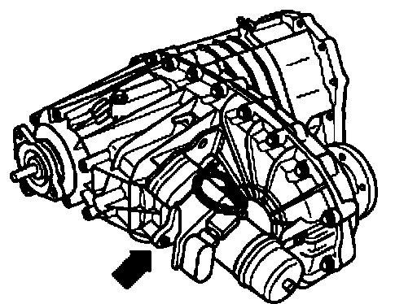
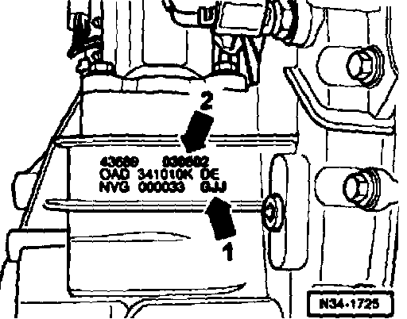
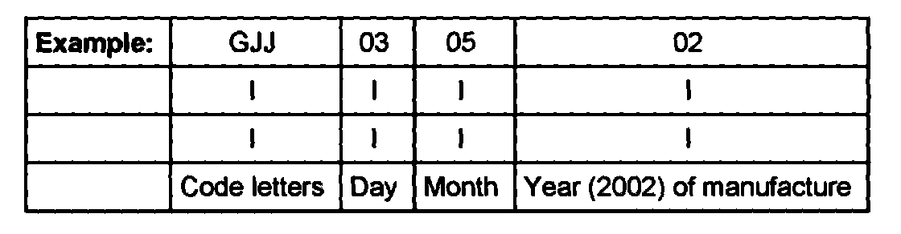

Transfer Case Identification
Transfer case identificationThe transfer case 0AD is allocated to the automatic transmission 09D.
Off-road reduction gearing is integrated into the transfer case.
Shifting between the street ratio (high range) and the off-road reduction gearing (low range) is initiated by the Transfer case operating unit -E473-.

Location on transfer case (arrow)

Code letters (arrow -I-) and date of manufacture (arrow -2-) of transfer case

Additional data depends on manufacture.